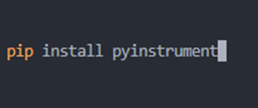
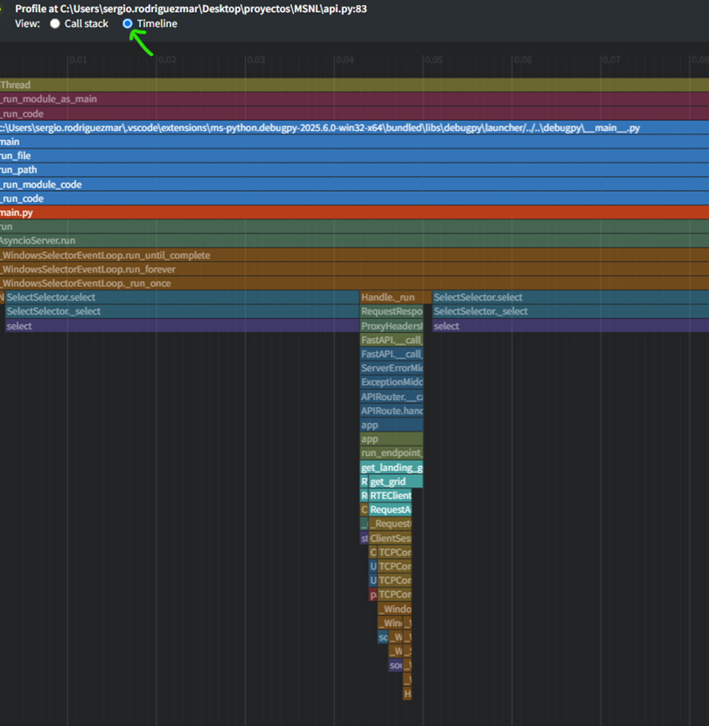

INTRODUCCIÓN
Pyinstrument es un profiler encargado de ayudar en la optimización de código, localizando incrementos en los tiempos de ejecución y visualizando así en que partes del código deberíamos de poner foco a la hora de la optimización. Esta herramienta se utiliza para encontrar cuellos de botella donde el rendimiento de las aplicaciones disminuye y esto lo hace de una manera rápida y clara. Es un programa activo durante el tiempo de ejecución que ofrece perfiles estadísticos, lo que quiere decir es que recoge muestras del programa en intervalos durante la misma ejecución para estimar el tiempo empleado en cada parte. (ComputerWorld, 2022)
EXPLICACIÓN
Para que sirve
- Optimización de código
- Localización de cuellos de botella
- Analisais de funciones principales
- Visualización de tiempos de ejecución
Donde utilizarlo
Este profiler puede ser utilizado en la ejecución de un script o implementado en el código. Algunas de las tecnologías en las que se puede utilizar es en Django, Flask y FastAPI, está última en la cual nos centraremos ya que la intención de este pequeño análisis está orientada a incluirlo es los microservicios que desarrollamos. Ofrece poca sobrecargar en FastAPI y nos da una visión clara y real del tiempo y en donde se localiza ese tiempo invertido en la ejecución del micro
FOTOGRAFIAS DE LA INSTALACIÓN


FAQ
¿Qué es PyInstrument?
PyInstrument es un profiler para Python que permite analizar el rendimiento de un programa y detectar qué partes del código consumen más tiempo de ejecución.
¿Cómo se instala PyInstrument?
PyInstrument se puede instalar utilizando pip. Simplemente ejecute el siguiente comando en su terminal:
pip install pyinstrument¿Diferencias con CProfile?
CProfile es un profiler más básico y de bajo nivel que se incluye con Python. PyInstrument, por otro lado, es más fácil de usar y proporciona una visualización más clara de los datos de rendimiento. Además, PyInstrument utiliza muestreo en lugar de seguimiento, lo que significa que tiene menos impacto en el rendimiento de la aplicación.